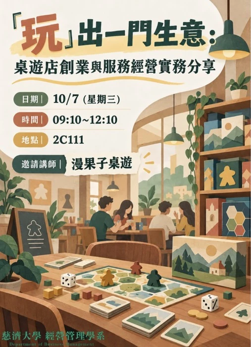
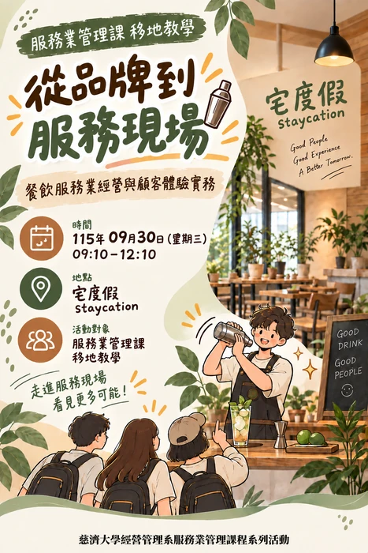
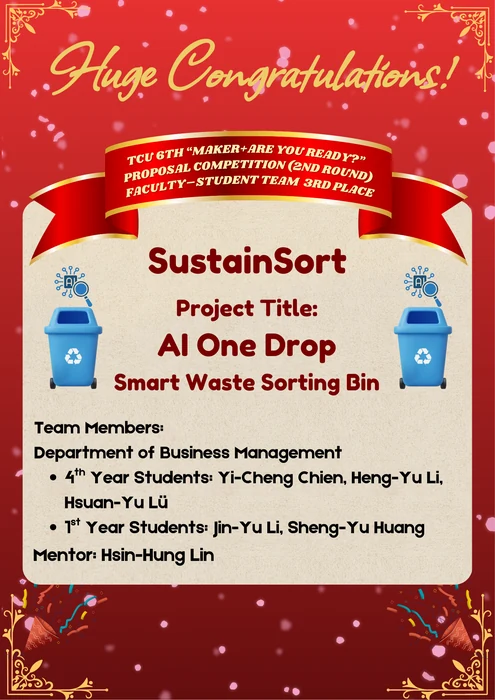
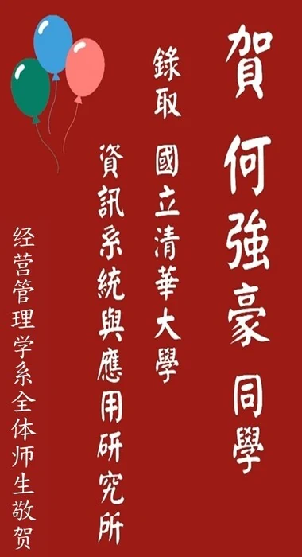
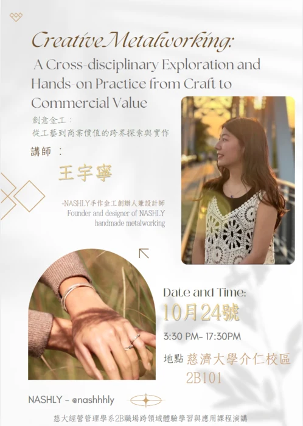
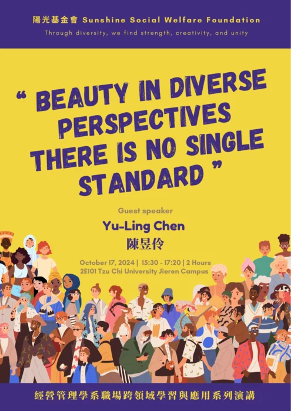

消息與公告

陶器園體驗服務設計
閱讀內容
大陳一村地方品牌探索
閱讀內容
從桌遊到創業
閱讀內容
從原民故事到地方品牌
閱讀內容
從品牌走進服務現場
閱讀內容
學生團隊獲選花蓮青年計畫補助
閱讀內容
用手機製作專業內容
閱讀內容
【系所成果】經管系學生榮獲慈濟大學「創客＋你準備好了嗎？」提案競賽第三名
閱讀內容
【系所成果】蘇美惠教授指導學生榮獲2025全國商業與管理專題競賽管理組第二名
閱讀內容
【系所成果】林俊銘教授指導Guang-Ming Bu與Kai-Te Hsu同學，榮獲2025全國商業與管理專題競賽管理組佳作
閱讀內容
【系所成果】恭賀Xing-Ai Li同學錄取愛丁堡大學循環經濟相關碩士課程
閱讀內容
【系所成果】恭賀Chiang-Hao He同學錄取國立清華大學資訊系統與應用研究所
閱讀內容
【系所成果】恭賀Yuan-Chun Chang同學獲里茲大學、雪菲爾大學及慈濟大學相關碩士課程錄取
閱讀內容
【產業實務】創意金工：從工藝到商業價值的跨域探索與實作
閱讀內容
【系所講座】多元視角的美，沒有單一標準
閱讀內容2010-03-01 2010年納稅服務隊甄選辦法
閱讀內容2009-08-12 花蓮高商-策略聯盟計劃
閱讀內容會計研究發展基金會舉辦免費「2009年大專院校會計系清寒學生會計稅務技能培訓班」
閱讀內容找不到符合的消息。